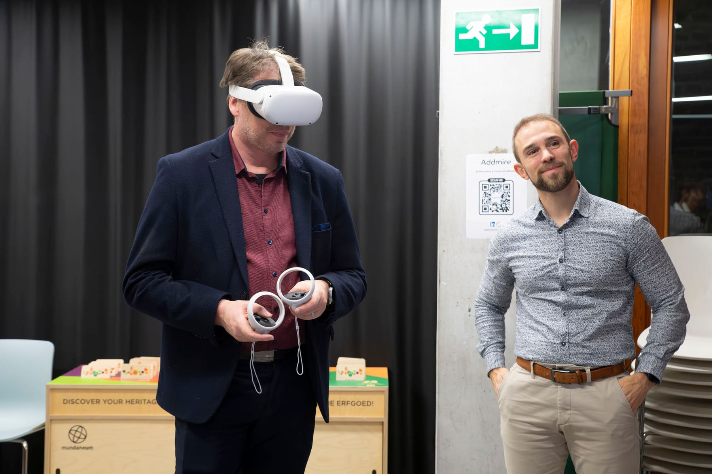
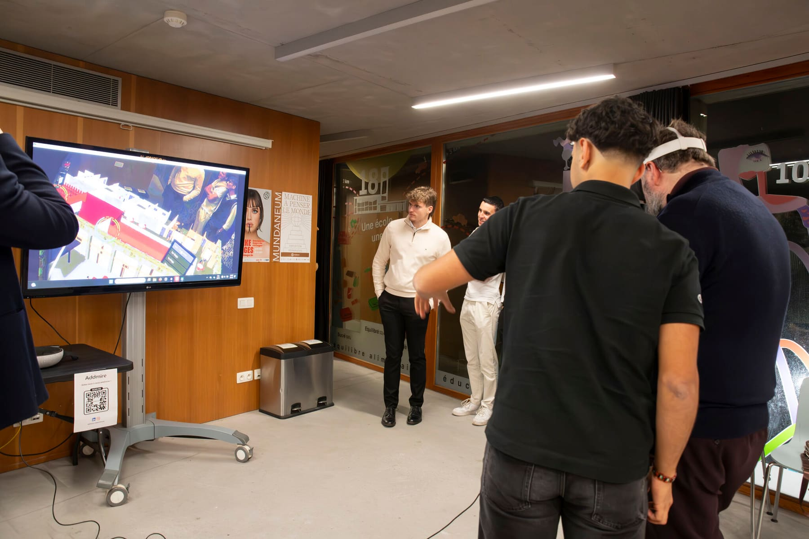
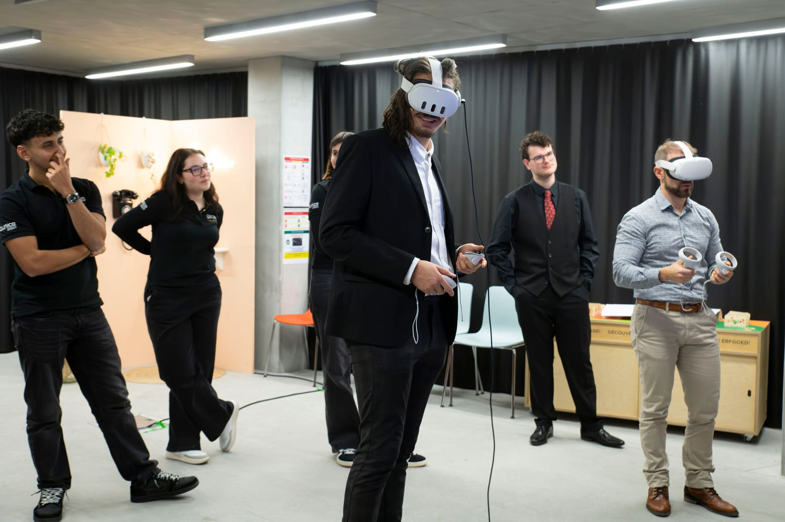

Une visite virtuelle guidée pour présenter le nouveau bâtiment Rosa Parks et l'histoire de l'Ecole des Sciences Humaines et Sociales.

Cette expérience immersive a été conçue pour les 20 ans de l'Ecole des Sciences Humaines et Sociales (ESHS) de l'Université de Mons. Elle permet aux utilisateurs d'explorer un modèle 3D entièrement interactif du bâtiment Rosa Parks, un lieu emblématique de l'université.
Le projet a été présenté lors de la soirée des 20 ans, et est destiné à être utilisé lors de journées portes ouvertes, salons étudiants et autres actions de promotion. Il illustre la capacité des technologies immersives à renforcer l'engagement du public et à offrir des expériences virtuelles mémorables.



Parmi les fonctionnalités principales : un environnement 3D interactif que les utilisateurs peuvent parcourir intuitivement. L'expérience propose une modélisation architecturale fidèle pour garantir un rendu réaliste, et constitue un outil attractif pour des usages promotionnels et pédagogiques, comme les journées portes ouvertes ou les salons étudiants.
L'impact a été significatif : cette expérience a offert aux futurs étudiants et aux visiteurs une manière moderne et innovante de découvrir le campus de l'ESHS. Ce projet a positionné les technologies immersives comme un outil précieux pour l'éducation et la communication, suscitant l'intérêt du corps enseignant comme des participants à l'événement.
Expérience présentée lors de la soirée des 20 ans de l'ESHS.
Parlons de votre idée — quel que soit le stade où elle se trouve.